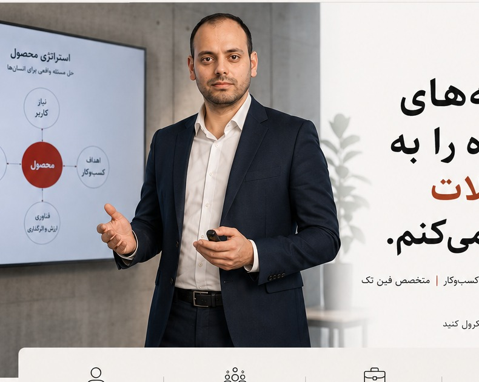

مدیریت محصول
چرخه عمر محصول، استراتژی، Roadmap، کشف محصول، اولویتبندی و لانچ.
از شناخت مسئله و تحلیل بازار تا طراحی محصول، اجرای پروژه و رسیدن به نتیجه قابلاندازهگیری.

مدیر محصول و تحلیلگر کسبوکار با پیشینه مهندسی و MBA و تجربه در توسعه محصولات دیجیتال، مالی و فینتک. مسیر حرفهای من از تحلیل و توسعه کسبوکار آغاز شد و به مدیریت محصول، مدیریت پروژه و هدایت تیمهای چابک رسید.
هدف من تبدیل مسئلههای واقعی کسبوکار به محصولاتی است که برای کاربر ارزش ایجاد کنند و برای سازمان نتیجه بسازند.
ببینید چگونه فکر میکنم ←چرخه عمر محصول، استراتژی، Roadmap، کشف محصول، اولویتبندی و لانچ.
تحلیل بازار، تحلیل رقبا، نیازمندیها، فرایندها و تبدیل مسئله به راهکار.
مدیریت پروژه، PMO، Scrum، مدیریت ذینفعان، ریسک، زمان و منابع.
تجربه توسعه محصولات فارکس، محصولات مالی، کریپتو و راهکارهای دیجیتال بانکی.
شروع مسیر حرفهای
تحلیل بازار، فرایند و نیازمندی
تجربه در تیمهای چابک
مدیریت پروژههای مالی و زیرساختی
از تحلیل بازار تا عرضه محصول
تجربه محصول در تیمهای بینالمللی
مالک محصول
بخشی از تجربه من در نقشهای محصول، پروژه، تحلیل کسبوکار و PMO.
فعالیت در حوزه مدیریت محصول و توسعه محصولات دیجیتال.
عرضه و فروش پنج محصول فارکس و اجرای پروژه Marketplace در بازار مالی.
مدیریت سبدی از ۳۰ پروژه همزمان و فعالیت در محصولات و زیرساخت بازار فارکس.
تحقیق بازار، تحلیل رقبا، جلسات کشف نیازمندی و طراحی فرایند و مشخصات محصول.
بخش مهمی از تجربه حرفهای من در توسعه محصولات و راهکارهای دیجیتال برای فارکس، بازارهای مالی و محصولات مالی بوده است.
دانشگاه سجاد · ۱۳۹۰ تا ۱۳۹۳
دانشگاه علم و صنعت ایران · ۱۳۹۴ تا ۱۳۹۶
مدیریت پروژه، تحلیل کسبوکار و کار در محیطهای چابک
علاقهمند به موضوعاتی در مرز میان مهندسی، علوم اعصاب، مدیریت و پزشکی هستم و از یادگیری میانرشتهای برای توسعه نگاه خودم به مسئله و تصمیمگیری استفاده میکنم.
برای گفتوگو درباره محصول، کسبوکار یا یک مسئله پیچیده، با من در ارتباط باشید.